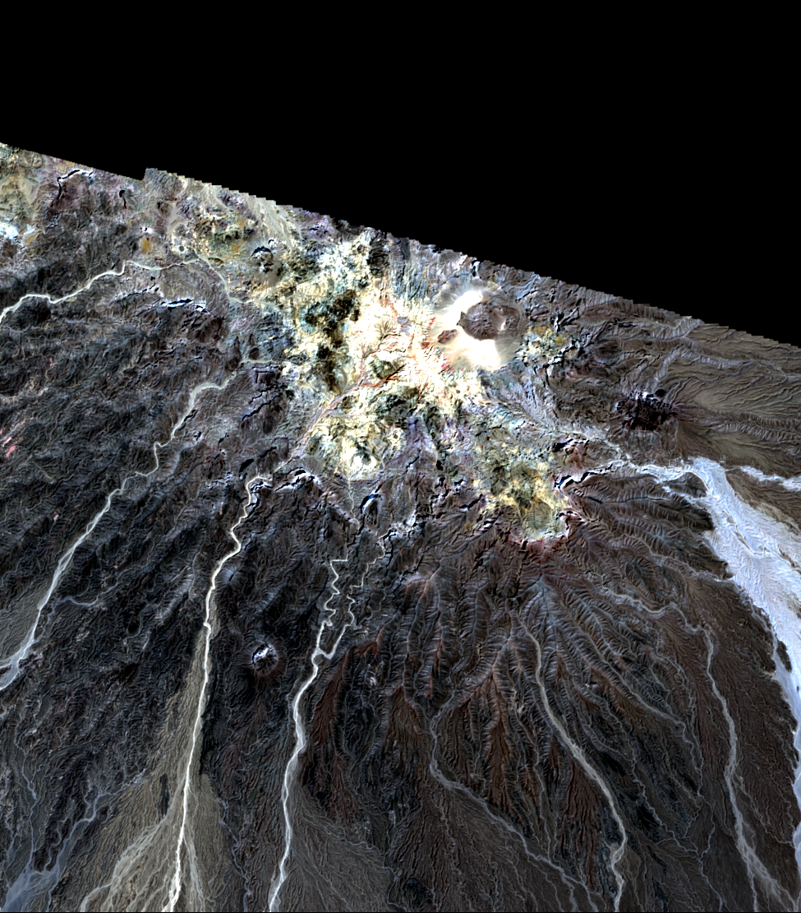

EARTH ANALOG DISCOVERY / PAKISTAN FIELD INTELLIGENCE
Read the terrain. Rehearse the mission.
A Pakistan-first analog evidence atlas connecting NASA planetary references, Copernicus Sentinel-2 observations, NASA POWER climatology and local geospatial knowledge to turn candidate environments into defensible field experiments.
MISSION REFERENCE / MOON + MARSEvidence-led site characterization Team X Æ A-Xii · Muhammad Usman Mughal
EARTH OBSERVATION / CANDIDATE FIELD VIEW
NASA GIBS corrected reflectance · satellite imagery overlay
NASA GIBS
PAKISTAN / CHAGAI HILLSORBITAL CONTEXT · 13 NOV 2026
Koh-i-Sultan · ChagaiVOLCANIC FIELD / PAKISTAN FLAGSHIP CANDIDATE
29.1000° N 62.8000° E
08Earth candidatesGlobal benchmarks + two Pakistan sites
20 mSentinel-2 analysis gridCommon support for spectral context indices
02 / COMPARATIVE FIELD EVIDENCE
What do the measurements say?
Only valid NASA POWER parameters are included. The field-campaign index is a relative workflow screen, not planetary similarity, geological equivalence or site safety certification.
SELECTED CANDIDATE / LIVE SNAPSHOT
Waiting for evidence screen
BEST CLIMATOLOGICAL FIELD MONTHS
TASK PROFILE
NASA POWER snapshot
Transparent index formula
This index ranks only the selected successful Earth candidates for the chosen Earth field workflow. It is not a Moon/Mars similarity percentage or a landing-site ranking.
CANDIDATE COMPARISON
Climate and field-campaign conditions
Rank
Earth candidate
Field index
Air temp
RH
Precip.
Wind 10 m
Diurnal range
Best months
No evidence loaded yet.
AIR TEMPERATURE
NASA POWER annual climatology · °C
WIND EXPOSURE
NASA POWER 10 m climatology · m/s
MISSION FIELD-TEST CARD
Turn evidence into a field experiment
ANALOG-X / FIELD TEST CARD
Field plan
Objectives & protocol
Equipment
Field window & climate
Planetary transfer limits
03 / PAKISTAN ORBITAL EVIDENCE
Two environments. Two distinct field questions.
Copernicus Sentinel-2 L2A scenes are discovered through Microsoft's public STAC catalogue. Derived spectral descriptors are kept separate from geology and ground truth.

SENTINEL-2 L2A20 M ANALYSIS GRIDCHAGAI / BALOCHISTAN
Koh-i-Sultan · Volcanic terrain context
Screen bare-surface contrast, vegetation masking and SWIR response to guide outcrop mapping. These are spectral indicators, not mineral identifications.
Screen snow/ice reflectance and cloud/shadow context for remote sensing and cold-field sensor workflows. Not a validated glacier outline or lunar cold-trap replica.
Spatial support matters: 10 m Sentinel-2 bands are resampled to a 20 m common grid for the SWIR analysis. Scene-level cloud percentage is not a guarantee that the selected field area is cloud-free. Verify image coverage, terrain shadow and field observations before drawing geological conclusions.
04 / EVIDENCE MODEL
Measured observations are not the same as analogy claims.
ANALOG-X treats each source as a distinct evidence layer and records what it can—and cannot—support.
Observed
NASA POWER climate
Gridded climatology at selected Earth coordinates. Used for field-season and campaign context only.
Observed
Sentinel-2 spectral context
20 m reflectance indices for bare surface, vegetation and snow/ice screening; not calibrated mineralogy.
Planetary reference
Moon / Mars archives
NASA MOLA, LRO LOLA and Diviner plus USGS Syrtis Major MC-13. Raw planetary raster comparison remains a separate validation stage.
Partner context
Pakistan source register
SUPARCO Space4Climate, NDMA, UN-SPIDER and EvK2CNR are mapped to relevant datasets, portals and known access limits.
Uncertainty
What does not transfer
Earth's gravity, pressure, radiation, dust charging, regolith mechanics, lunar shadow cycles and surface temperatures do not equal lunar/Martian conditions.
Output
Field validation plan
Turns a candidate site and mission task into a test protocol, equipment list, measurement record and gap list.
05 / DATA REGISTRY
Institutional data, not duplicated dashboards.
Existing monitoring systems are treated as source authorities. ANALOG-X's role is to connect relevant evidence to planetary field-method questions.
NASA / live snapshot
NASA POWER Climatology
2 m air temperature, humidity, precipitation, 10 m wind and all-sky shortwave radiation. Server-side snapshot workflow runs weekly.
Public monitoring themes include glaciers, snow cover, GLOF, aerosols, land cover, forestry, waterways and coastal change. Raw layer API/download permissions still need confirmation.
Early-warning advisories, GLOF outlooks, hazard projections and situation reports are useful for field planning; NDMA's own warning and exposure systems are not being recreated.
Published inventory of 13,032 glaciers (13,546.93 km²). Geoportal states climate downloads require authentication; access to vectors and reuse terms must be checked.
Mars topography, lunar altimetry and lunar surface temperature reference products. Raw raster-to-raster harmonized analysis is a planned validation module.
Historical 2.5-arc-minute gridded hazard-frequency data for 1979–2000; useful for regional context, not a current volcanic hazard assessment or mineral map.
Google Earth Engine is optional for this build. Its non-commercial projects require registration and eligibility verification; Microsoft Planetary Computer's public STAC and SAS access are currently sufficient for Sentinel-2 scene discovery and COG retrieval.